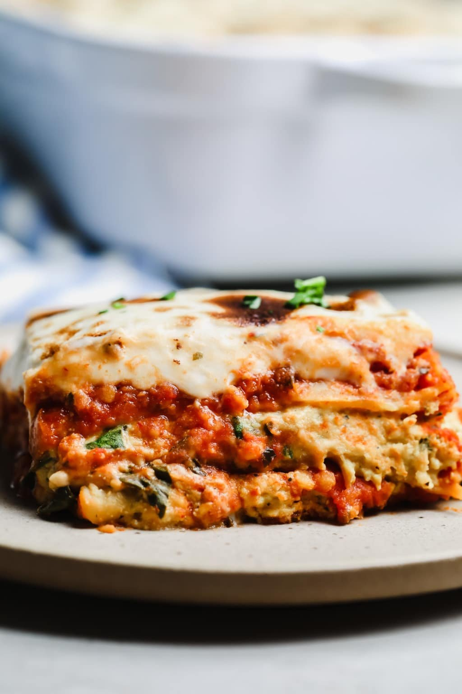

Easy Vegan Lasagna

Description
This vegan lasagna is easy to make and will make you cry tears of joy when you bite into it. Using store bought vegan cheese will work jsut fine in this recipe- the real flavor comes from the sauce. Keep reading to find out how to make this exactly like a high-end vegan restaurant would.
Ingredients
- Lasagna noodles
- Tomato sauce
- Vegan cheese
- Vegan meat crumbles
- Spinach
- Spices
Steps
- Boil water and preheat oven to 425F
- Fry the crumbles
- Add noodles to water and cook to package directions
- Add tomato sauce to crumbles and simmer
- When done, layer noodles into oiled dish and add the vegan meat sauce with handfuls of spinach.
- Make two layers with sauce, spinach, and cheese. Then top the stack with a layer of sauce over the whole dish.
- Bake the lasagna for 15-20 minutes.
Home